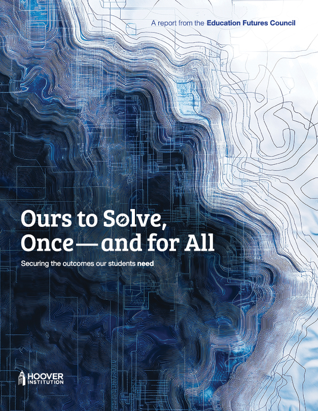

Ours to Solve, Once — and for All
Securing the outcomes our students need

Read the Full Report
The Education Futures Council (EFC) has released its report, "Ours to Solve, Once – and For All." The report outlines a new framework for revitalizing public K–12 education across the nation. The report calls for a comprehensive new approach that focuses on organizing for student-based results. It proposes strategies prioritizing incentivizing educational mastery, minimizing rigid mandates, and cultivating a dynamic, responsive education workforce. Each recommendation is deliberately designed to interconnect with the others and be executed as a whole to effect meaningful change.

Why Read, When You Can Listen?!
We know you're on the road and many things are competing for your attention. In an effort to practice what we preach, we've used the latest AI technology to create this unique podcast episode where our two AI hosts take a deep dive into the report.
Additional Resources
Explore supporting materials and resources, grounded in research and evidence, which reflect the last 40 years of K-12 education reform initiatives, the current state of our schools today, and a look-ahead to what could be possible for students and educators in a reimagined system.
Related Resources
In Their Words
“Education excellence is critical to the societal contract supporting our democracy and is inextricably tied to the success - or failure - of our nation.
“Our "True North" must always point toward student outcomes. Despite a national commitment to the issue, steep increases in funding, and decades of reform efforts, our current system has been unable to reverse poor student outcomes.